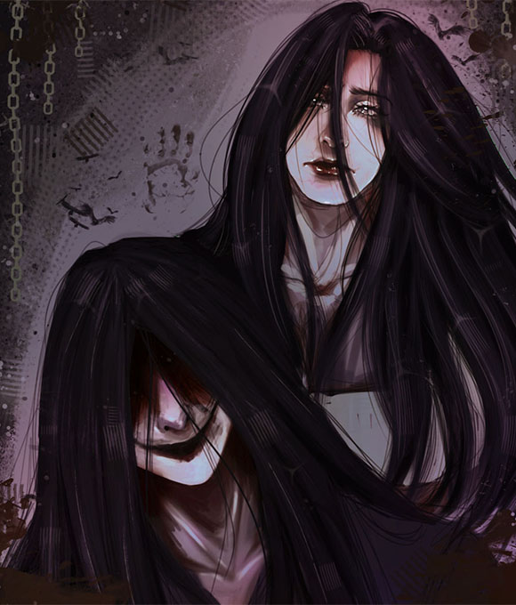
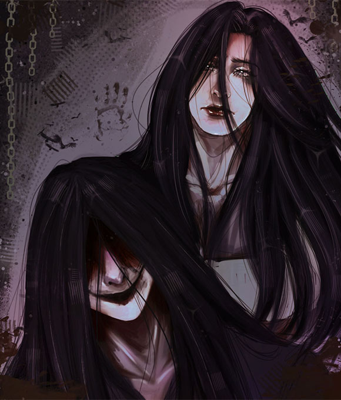
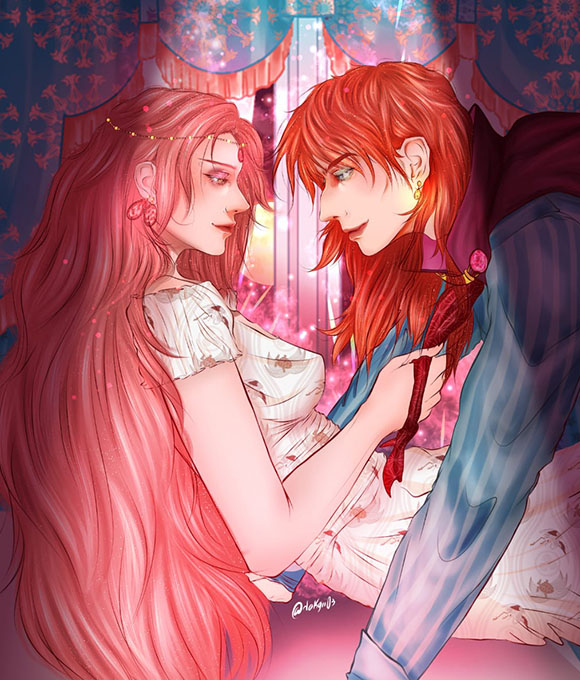
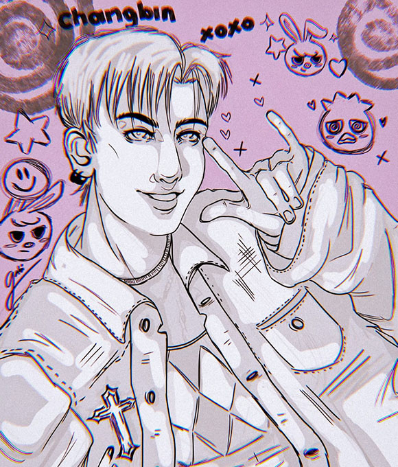
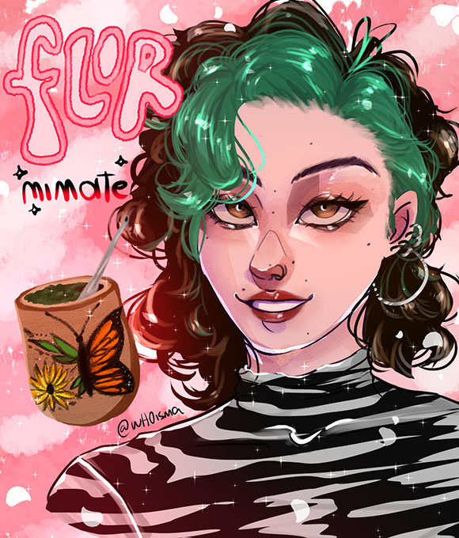

*TRABAJOS
ilustrativos
VISUAL SKETCH
mis más preciadas ilustraciones, mis bebes...
 

Mr Crawling & Lady
Dos personajes de un videojuego gótico y de terror, ellos siendo protagonistas. Como duo transmiten soledad, inquietud y mucho misterio. Mediante la paleta de colores se buscó transmitir esa atmosfera tan fría y escalofriante.

Granmamare & Fujimoto
Esta pareja son los padres de Ponyo en la película de Studio Ghibli llamada de igual forma, su relación es tan fuerte y a la vez tan compleja porque de un lado ella es poderosa y una diosa del mar, y el un hechicero con un gran resentimiento con los humanos además de sobreprotector con su hija.

Changbin
Aparte de los personajes de los juegos o de las películas también me encanta el kpop, since 2012, y uno de los grupos que la esta rompiendo cada vez que sacan un nuevo álbum, son los Stray Kids, uno de los integrantes es Changbin, rapero y compositor, el cual admiro mucho de su habilidad y por ser tan carismático.

Mimate by Flor
Realicé una ilustración para una amiga a quien quiero y admiro profundamente. Ella es una artista increíble, y se dedica a pintar mates, transformándolos en piezas únicas, llenas de vida, memoria y significado. A través de su arte, celebra aquello que nos une como argentinos: el mate como símbolo de encuentro, afecto y tradición.